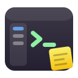
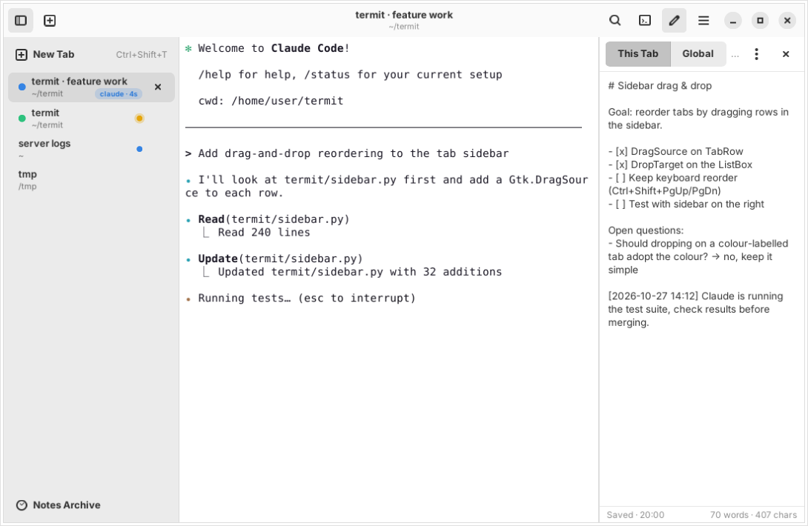

A GNOME-style terminal with vertical tabs and a note on every tab. Built with GTK 4, libadwaita and VTE — made for people who share their terminal with Claude Code.

Tabs live in a sidebar on the left or right. Each one shows its folder, a colour label, the program that is running and for how long — claude · 12m at a glance.
Every tab carries its own note: the plan, open questions, follow-ups. Notes autosave, survive restarts and are archived rather than lost when the tab closes.
Activity dots for background output, a warning dot and a desktop notification when a tab rings the bell — for example when Claude Code waits for your answer.
VTE emulation like GNOME Terminal, Ctrl+click links and file paths, regex search, zoom, scrollback, seven palettes, light and dark mode that follows the system.
Split a tab to the right or downwards, as deep as you like. Move between panes with Alt+arrows. Layouts come back with the session.
A menu for the commands you type all day. Ships with claude, claude --continue, claude --resume and common git commands.
Warns before pasting several lines into the shell, but stays out of the way while a program is in the foreground — long prompts paste without friction.
Termit needs Python 3, GTK 4, libadwaita 1.4+ and VTE 0.72+ (GTK 4 build).
# Debian / Ubuntu
sudo apt install python3-gi gir1.2-gtk-4.0 gir1.2-adw-1 gir1.2-vte-3.91
# Fedora
sudo dnf install python3-gobject gtk4 libadwaita vte291-gtk4
# Arch Linux
sudo pacman -S python-gobject gtk4 libadwaita vte4
git clone https://github.com/aripdcom/termit.git
cd termit
make install # installs to ~/.localLet Claude Code ring the terminal bell and Termit will flag the tab and send a desktop notification when it needs you:
claude config set --global preferredNotifChannel terminal_bellWrite the task, decisions and follow-ups into the tab's note. Close the tab and the note moves to the archive; open the folder again and Termit offers to bring it back.
| Ctrl+Shift+T / W | New tab / close tab |
| Ctrl+Shift+B | Show or hide the tab sidebar |
| Ctrl+Shift+N | Show or hide notes |
| Ctrl+Shift+E / Esc | Focus the note editor / back to the terminal |
| Ctrl+Shift+S | Snippets |
| Alt+1 … 9 | Switch to tab 1–9 |
| F2 | Rename tab |
| Ctrl+Shift+L | Find a tab by title, folder, process or note |
| Ctrl+Alt+R / D | Split the pane to the right / downwards |
| Alt+← ↑ → ↓ | Move focus between panes |
| Ctrl+Shift+F | Find in the terminal |
| Ctrl+? | All shortcuts |